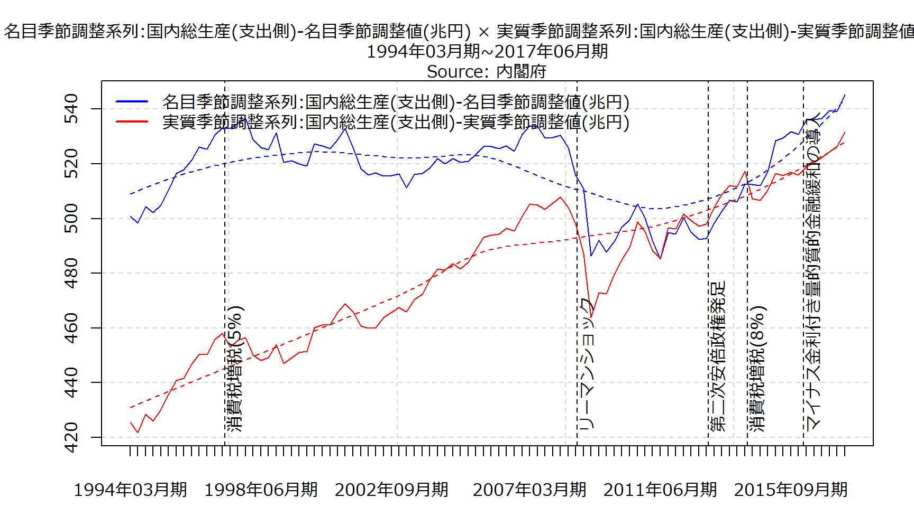
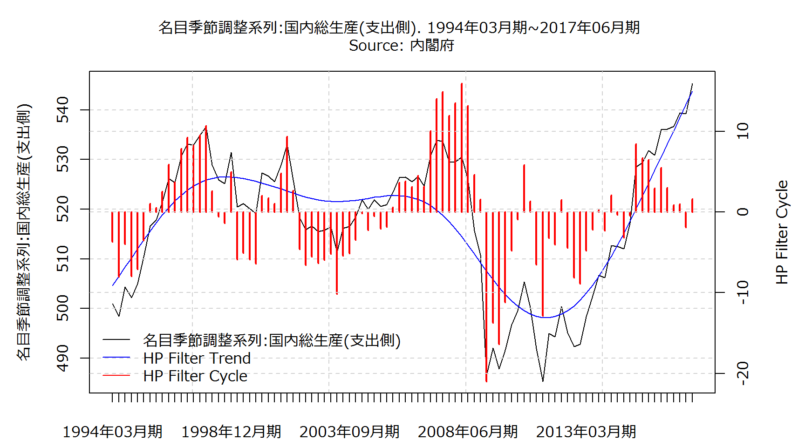
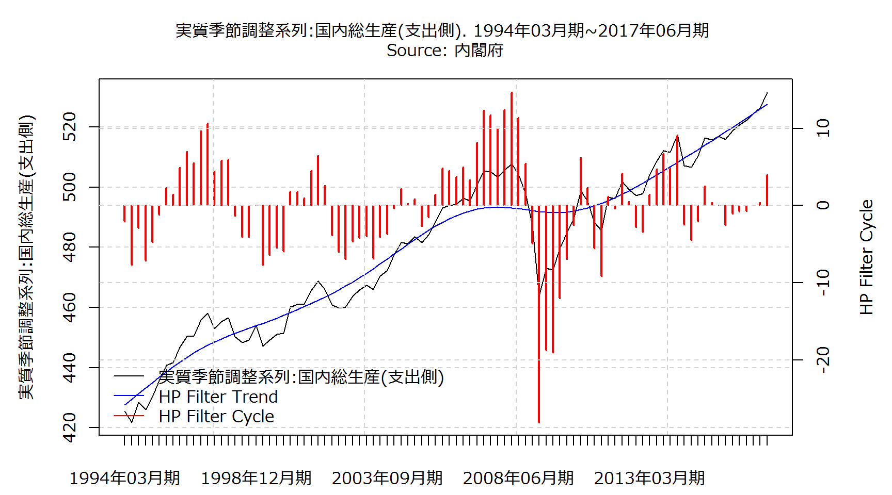
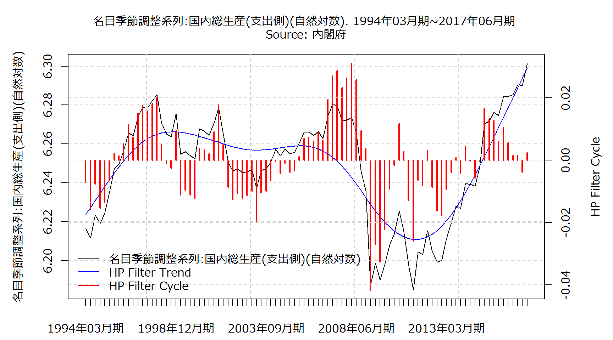
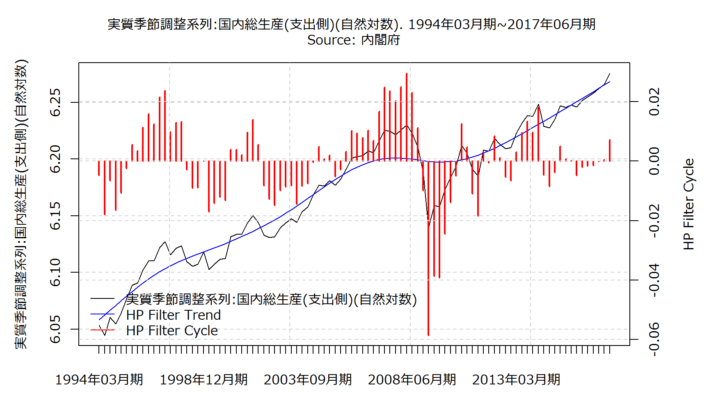
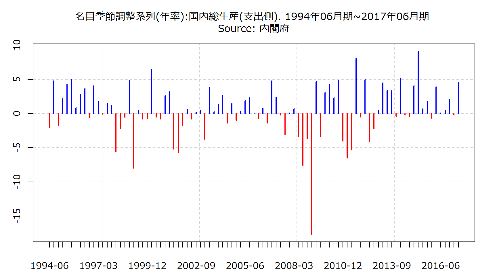
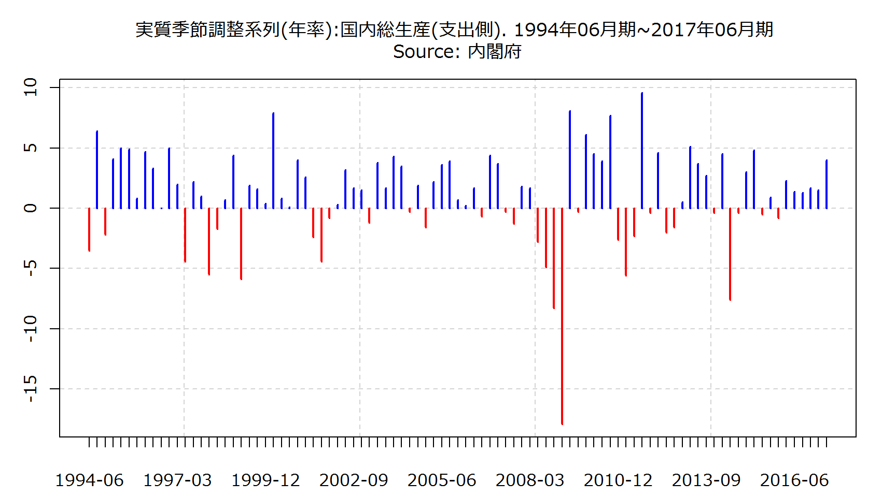
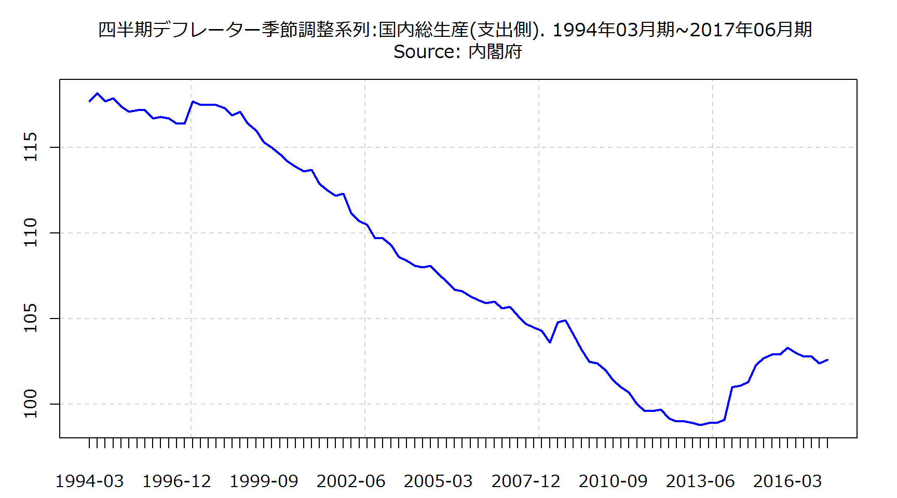

実質季節調整系列(年率) \[年率表示の成長率= \left (\left (\frac{当期の実質季節調整値実数}{前期の実質季節調整値実数} \right ) ^{4}-1 \right )\times 100\]
名目原系列(寄与度) \[寄与度＝\frac{\left(当期の実数-前年同期の実数\right)}{前年同期の国内総生産\left(支出側\right)\left(または国民総所得\right)}\times100\]
名目季節調整系列(寄与度) \[寄与度＝\frac{\left(当期の実数-前期の実数\right)}{前期の国内総生産\left(支出側\right)\left(または国民総所得\right)}\times100\]
名目季節調整系列(年率) \[年率表示の成長率= \left (\left (\frac{当期の名目季節調整値実数}{前期の名目季節調整値実数} \right ) ^{4}-1 \right )\times 100\]
四半期デフレーター原系列 \[四半期デフレーター原系列=\left(\frac{名目原系列}{実質原系列}\right)\times100\]
四半期デフレーター季節調整系列 \[四半期デフレーター季節調整系列=\left(\frac{名目季節調整系列}{実質季節調整系列}\right)\times100\]








構成比(%)
構成比(%)
| Item | 2016年12月期 | 2017年03月期 | 2017年06月期 |
|---|---|---|---|
| 名目季節調整系列:国内総生産(支出側) | 539.4134 | 539.1995 | 545.3522 |
| 名目季節調整系列:民間最終消費支出 | 301.9 | 302.5068 | 305.0194 |
| 名目季節調整系列:民間最終消費支出:家計最終消費支出 | 294.2211 | 294.7782 | 297.2506 |
| 名目季節調整系列:民間最終消費支出:家計最終消費支出:除く持ち家の帰属家賃 | 244.3309 | 244.8619 | 247.3147 |
| 名目季節調整系列:民間住宅 | 17.0654 | 17.3043 | 17.572 |
| 名目季節調整系列:民間企業設備 | 83.0362 | 84.07 | 86.5302 |
| 名目季節調整系列:民間在庫変動 | -0.2252 | -1.2756 | -0.9214 |
| 名目季節調整系列:政府最終消費支出 | 106.1426 | 106.1818 | 106.5755 |
| 名目季節調整系列:公的固定資本形成 | 25.5162 | 25.786 | 27.15 |
| 名目季節調整系列:公的在庫変動 | 0.0157 | 0.0153 | 0.0252 |
| 名目季節調整系列:財貨・サービス:純輸出 | 5.9624 | 4.6107 | 3.4013 |
| 名目季節調整系列:財貨・サービス:輸出 | 89.6395 | 94.6032 | 93.5497 |
| 名目季節調整系列:財貨・サービス:輸入 | 83.6771 | 89.9925 | 90.1483 |
| Item | 2016年12月期 | 2017年03月期 | 2017年06月期 |
|---|---|---|---|
| 実質季節調整系列:国内総生産(支出側) | 524.4837 | 526.3928 | 531.5306 |
| 実質季節調整系列:民間最終消費支出 | 297.6232 | 298.7597 | 301.4741 |
| 実質季節調整系列:民間最終消費支出:家計最終消費支出 | 289.8939 | 290.9833 | 293.6559 |
| 実質季節調整系列:民間最終消費支出:家計最終消費支出:除く持ち家の帰属家賃 | 237.0644 | 237.9829 | 240.4638 |
| 実質季節調整系列:民間住宅 | 16.152 | 16.2906 | 16.5284 |
| 実質季節調整系列:民間企業設備 | 82.1395 | 82.8735 | 84.8527 |
| 実質季節調整系列:民間在庫変動 | -0.2568 | -1.0889 | -0.8764 |
| 実質季節調整系列:政府最終消費支出 | 105.8589 | 105.7913 | 106.1431 |
| 実質季節調整系列:公的固定資本形成 | 24.4332 | 24.5695 | 25.8142 |
| 実質季節調整系列:公的在庫変動 | 0.021 | 0.0236 | 0.0294 |
| 実質季節調整系列:財貨・サービス:純輸出 | -2.0076 | -1.5036 | -3.1465 |
| 実質季節調整系列:財貨・サービス:輸出 | 86.7029 | 88.3785 | 87.9627 |
| 実質季節調整系列:財貨・サービス:輸入 | 88.7105 | 89.8821 | 91.1091 |
| 実質季節調整系列:開差 | 0.5203 | 0.6771 | 0.7116 |
| Item | 2016年12月期 | 2017年03月期 | 2017年06月期 |
|---|---|---|---|
| 名目季節調整系列(年率):国内総生産(支出側) | 2.1 | -0.2 | 4.6 |
| 名目季節調整系列(年率):民間最終消費支出 | 2.2 | 0.8 | 3.4 |
| 名目季節調整系列(年率):民間最終消費支出:家計最終消費支出 | 2.2 | 0.8 | 3.4 |
| 名目季節調整系列(年率):民間最終消費支出:家計最終消費支出:除く持ち家の帰属家賃 | 2.7 | 0.9 | 4.1 |
| 名目季節調整系列(年率):民間住宅 | 4 | 5.7 | 6.3 |
| 名目季節調整系列(年率):民間企業設備 | 8.9 | 5.1 | 12.2 |
| 名目季節調整系列(年率):民間在庫変動 | NA | NA | NA |
| 名目季節調整系列(年率):政府最終消費支出 | 1.2 | 0.1 | 1.5 |
| 名目季節調整系列(年率):公的固定資本形成 | -6.8 | 4.3 | 22.9 |
| 名目季節調整系列(年率):公的在庫変動 | NA | NA | NA |
| 名目季節調整系列(年率):財貨・サービス:純輸出 | NA | NA | NA |
| 名目季節調整系列(年率):財貨・サービス:輸出 | 23.6 | 24.1 | -4.4 |
| 名目季節調整系列(年率):財貨・サービス:輸入 | 23.5 | 33.8 | 0.7 |
| Item | 2016年12月期 | 2017年03月期 | 2017年06月期 |
|---|---|---|---|
| 実質季節調整系列(年率):国内総生産(支出側) | 1.7 | 1.5 | 4 |
| 実質季節調整系列(年率):民間最終消費支出 | 0.6 | 1.5 | 3.7 |
| 実質季節調整系列(年率):民間最終消費支出:家計最終消費支出 | 0.5 | 1.5 | 3.7 |
| 実質季節調整系列(年率):民間最終消費支出:家計最終消費支出:除く持ち家の帰属家賃 | 0.4 | 1.6 | 4.2 |
| 実質季節調整系列(年率):民間住宅 | 1 | 3.5 | 6 |
| 実質季節調整系列(年率):民間企業設備 | 8.9 | 3.6 | 9.9 |
| 実質季節調整系列(年率):民間在庫変動 | NA | NA | NA |
| 実質季節調整系列(年率):政府最終消費支出 | 0.1 | -0.3 | 1.3 |
| 実質季節調整系列(年率):公的固定資本形成 | -9.5 | 2.3 | 21.9 |
| 実質季節調整系列(年率):公的在庫変動 | NA | NA | NA |
| 実質季節調整系列(年率):財貨・サービス:純輸出 | NA | NA | NA |
| 実質季節調整系列(年率):財貨・サービス:輸出 | 13.2 | 8 | -1.9 |
| 実質季節調整系列(年率):財貨・サービス:輸入 | 5.5 | 5.4 | 5.6 |
| Item | 2016年12月期 | 2017年03月期 | 2017年06月期 |
|---|---|---|---|
| 四半期デフレーター季節調整系列:国内総生産(支出側) | 102.8 | 102.4 | 102.6 |
| 四半期デフレーター季節調整系列:民間最終消費支出 | 101.4 | 101.3 | 101.2 |
| 四半期デフレーター季節調整系列:民間最終消費支出:家計最終消費支出 | 101.5 | 101.3 | 101.2 |
| 四半期デフレーター季節調整系列:民間最終消費支出:家計最終消費支出:除く持ち家の帰属家賃 | 103.1 | 102.9 | 102.8 |
| 四半期デフレーター季節調整系列:民間住宅 | 105.7 | 106.2 | 106.3 |
| 四半期デフレーター季節調整系列:民間企業設備 | 101.1 | 101.4 | 102 |
| 四半期デフレーター季節調整系列:民間在庫変動 | NA | NA | NA |
| 四半期デフレーター季節調整系列:政府最終消費支出 | 100.3 | 100.4 | 100.4 |
| 四半期デフレーター季節調整系列:公的固定資本形成 | 104.4 | 105 | 105.2 |
| 四半期デフレーター季節調整系列:公的在庫変動 | NA | NA | NA |
| 四半期デフレーター季節調整系列:財貨・サービス:純輸出 | NA | NA | NA |
| 四半期デフレーター季節調整系列:財貨・サービス:輸出 | 103.4 | 107 | 106.4 |
| 四半期デフレーター季節調整系列:財貨・サービス:輸入 | 94.3 | 100.1 | 98.9 |
| Item | 2016年12月期 | 2017年03月期 | 2017年06月期 |
|---|---|---|---|
| 名目原系列:国内総生産(支出側) | 140.2929 | 134.2013 | 134.5563 |
| 名目原系列:民間最終消費支出 | 77.5374 | 75.0306 | 75.0127 |
| 名目原系列:民間最終消費支出:家計最終消費支出 | 75.1739 | 73.4671 | 73.0957 |
| 名目原系列:民間最終消費支出:家計最終消費支出:除く持ち家の帰属家賃 | 62.6972 | 60.9882 | 60.6133 |
| 名目原系列:民間住宅 | 4.418 | 4.2647 | 4.1852 |
| 名目原系列:民間企業設備 | 20.4735 | 23.932 | 19.4073 |
| 名目原系列:民間在庫変動 | 0.8037 | -2.8085 | 1.4163 |
| 名目原系列:政府最終消費支出 | 28.373 | 25.3292 | 28.2244 |
| 名目原系列:公的固定資本形成 | 7.2172 | 7.2067 | 5.452 |
| 名目原系列:公的在庫変動 | -0.0036 | 0.0236 | -0.0018 |
| 名目原系列:財貨・サービス:純輸出 | 1.4738 | 1.223 | 0.8602 |
| 名目原系列:財貨・サービス:輸出 | 22.875 | 23.9273 | 23.0387 |
| 名目原系列:財貨・サービス:輸入 | 21.4012 | 22.7043 | 22.1785 |
| Item | 2016年12月期 | 2017年03月期 | 2017年06月期 |
|---|---|---|---|
| 実質原系列:国内総生産(支出側) | 134.1241 | 132.902 | 129.4982 |
| 実質原系列:民間最終消費支出 | 76.0898 | 74.5446 | 73.808 |
| 実質原系列:民間最終消費支出:家計最終消費支出 | 73.928 | 72.8409 | 71.9489 |
| 実質原系列:民間最終消費支出:家計最終消費支出:除く持ち家の帰属家賃 | 60.7006 | 59.5913 | 58.6745 |
| 実質原系列:民間住宅 | 4.172 | 4.0208 | 3.935 |
| 実質原系列:民間企業設備 | 20.167 | 23.5871 | 19.0705 |
| 実質原系列:民間在庫変動 | 0.8486 | -2.8289 | 1.4567 |
| 実質原系列:政府最終消費支出 | 26.5043 | 26.7316 | 26.5626 |
| 実質原系列:公的固定資本形成 | 6.8851 | 6.8773 | 5.1879 |
| 実質原系列:公的在庫変動 | -0.0041 | 0.0308 | -0.0037 |
| 実質原系列:財貨・サービス:純輸出 | -0.6515 | -0.3959 | -0.5879 |
| 実質原系列:財貨・サービス:輸出 | 21.9564 | 22.2687 | 21.6788 |
| 実質原系列:財貨・サービス:輸入 | 22.6079 | 22.6646 | 22.2667 |
| 実質原系列:開差 | 0.1129 | 0.3347 | 0.0692 |
| Item | 2014年01月期 | 2015年01月期 | 2016年01月期 |
|---|---|---|---|
| 名目暦年:国内総生産(支出側) | 513.698 | 530.157 | 537.0574 |
| 名目暦年:民間最終消費支出 | 300.1175 | 300.2928 | 300.2273 |
| 名目暦年:民間最終消費支出:家計最終消費支出 | 293.1125 | 292.9264 | 292.6073 |
| 名目暦年:民間最終消費支出:家計最終消費支出:除く持ち家の帰属家賃 | 243.3373 | 243.075 | 242.708 |
| 名目暦年:民間住宅 | 15.959 | 15.8425 | 16.594 |
| 名目暦年:民間企業設備 | 79.7366 | 81.3497 | 81.7197 |
| 名目暦年:民間在庫変動 | -0.3342 | 2.5219 | 1.0165 |
| 名目暦年:政府最終消費支出 | 103.561 | 105.3277 | 106.2567 |
| 名目暦年:公的固定資本形成 | 27.2412 | 27.0341 | 26.0074 |
| 名目暦年:公的在庫変動 | 0.0848 | 0.0144 | 0.0319 |
| 名目暦年:財貨・サービス:純輸出 | -12.6679 | -2.2261 | 5.2038 |
| 名目暦年:財貨・サービス:輸出 | 90.1354 | 93.5711 | 86.7658 |
| 名目暦年:財貨・サービス:輸入 | 102.8033 | 95.7972 | 81.562 |
| Item | 2014年01月期 | 2015年01月期 | 2016年01月期 |
|---|---|---|---|
| 実質暦年:国内総生産(支出側) | 510.4892 | 516.1715 | 521.4971 |
| 実質暦年:民間最終消費支出 | 296.4351 | 295.4402 | 296.6007 |
| 実質暦年:民間最終消費支出:家計最終消費支出 | 289.4101 | 288.0999 | 288.9621 |
| 実質暦年:民間最終消費支出:家計最終消費支出:除く持ち家の帰属家賃 | 238.0051 | 236.098 | 236.3624 |
| 実質暦年:民間住宅 | 15.2022 | 14.9593 | 15.7939 |
| 実質暦年:民間企業設備 | 78.7629 | 79.6453 | 80.6982 |
| 実質暦年:民間在庫変動 | -0.3086 | 2.7929 | 1.1854 |
| 実質暦年:政府最終消費支出 | 102.93 | 104.6311 | 106.0294 |
| 実質暦年:公的固定資本形成 | 26.3742 | 25.8169 | 25.0403 |
| 実質暦年:公的在庫変動 | 0.0723 | -0.0014 | 0.0513 |
| 実質暦年:財貨・サービス:純輸出 | -8.892 | -7.1944 | -4.1483 |
| 実質暦年:財貨・サービス:輸出 | 80.6952 | 83.0712 | 84.0484 |
| 実質暦年:財貨・サービス:輸入 | 89.5873 | 90.2656 | 88.1967 |
| 実質暦年:開差 | -0.0868 | 0.0816 | 0.2461 |
| Item | 2016年12月期 | 2017年03月期 | 2017年06月期 |
|---|---|---|---|
| 名目原系列(前年同期比):国内総生産(支出側) | 1.6 | 0.7 | 1.6 |
| 名目原系列(前年同期比):民間最終消費支出 | 0.7 | 1.1 | 1.9 |
| 名目原系列(前年同期比):民間最終消費支出:家計最終消費支出 | 0.7 | 1.1 | 1.8 |
| 名目原系列(前年同期比):民間最終消費支出:家計最終消費支出:除く持ち家の帰属家賃 | 0.8 | 1.3 | 2.2 |
| 名目原系列(前年同期比):民間住宅 | 6.9 | 8.1 | 7.3 |
| 名目原系列(前年同期比):民間企業設備 | 2.5 | 3.5 | 6.4 |
| 名目原系列(前年同期比):民間在庫変動 | NA | NA | NA |
| 名目原系列(前年同期比):政府最終消費支出 | 0 | -1.2 | 0.9 |
| 名目原系列(前年同期比):公的固定資本形成 | -4.4 | -2.9 | 4.5 |
| 名目原系列(前年同期比):公的在庫変動 | NA | NA | NA |
| 名目原系列(前年同期比):財貨・サービス:純輸出 | NA | NA | NA |
| 名目原系列(前年同期比):財貨・サービス:輸出 | -1.3 | 8.1 | 10.3 |
| 名目原系列(前年同期比):財貨・サービス:輸入 | -9.4 | 8.3 | 12.8 |
| Item | 2016年12月期 | 2017年03月期 | 2017年06月期 |
|---|---|---|---|
| 名目季節調整系列(前期比):国内総生産(支出側) | 0.5 | 0 | 1.1 |
| 名目季節調整系列(前期比):民間最終消費支出 | 0.6 | 0.2 | 0.8 |
| 名目季節調整系列(前期比):民間最終消費支出:家計最終消費支出 | 0.5 | 0.2 | 0.8 |
| 名目季節調整系列(前期比):民間最終消費支出:家計最終消費支出:除く持ち家の帰属家賃 | 0.7 | 0.2 | 1 |
| 名目季節調整系列(前期比):民間住宅 | 1 | 1.4 | 1.5 |
| 名目季節調整系列(前期比):民間企業設備 | 2.2 | 1.2 | 2.9 |
| 名目季節調整系列(前期比):民間在庫変動 | NA | NA | NA |
| 名目季節調整系列(前期比):政府最終消費支出 | 0.3 | 0 | 0.4 |
| 名目季節調整系列(前期比):公的固定資本形成 | -1.7 | 1.1 | 5.3 |
| 名目季節調整系列(前期比):公的在庫変動 | NA | NA | NA |
| 名目季節調整系列(前期比):財貨・サービス:純輸出 | NA | NA | NA |
| 名目季節調整系列(前期比):財貨・サービス:輸出 | 5.4 | 5.5 | -1.1 |
| 名目季節調整系列(前期比):財貨・サービス:輸入 | 5.4 | 7.5 | 0.2 |
| Item | 2014年01月期 | 2015年01月期 | 2016年01月期 |
|---|---|---|---|
| 名目暦年(前年比):国内総生産(支出側) | 2.1 | 3.2 | 1.3 |
| 名目暦年(前年比):民間最終消費支出 | 1.2 | 0.1 | 0 |
| 名目暦年(前年比):民間最終消費支出:家計最終消費支出 | 1.3 | -0.1 | -0.1 |
| 名目暦年(前年比):民間最終消費支出:家計最終消費支出:除く持ち家の帰属家賃 | 1.5 | -0.1 | -0.2 |
| 名目暦年(前年比):民間住宅 | -0.9 | -0.7 | 4.7 |
| 名目暦年(前年比):民間企業設備 | 6.4 | 2 | 0.5 |
| 名目暦年(前年比):民間在庫変動 | NA | NA | NA |
| 名目暦年(前年比):政府最終消費支出 | 2.1 | 1.7 | 0.9 |
| 名目暦年(前年比):公的固定資本形成 | 3.4 | -0.8 | -3.8 |
| 名目暦年(前年比):公的在庫変動 | NA | NA | NA |
| 名目暦年(前年比):財貨・サービス:純輸出 | NA | NA | NA |
| 名目暦年(前年比):財貨・サービス:輸出 | 12.6 | 3.8 | -7.3 |
| 名目暦年(前年比):財貨・サービス:輸入 | 12.1 | -6.8 | -14.9 |
| Item | 2016年12月期 | 2017年03月期 | 2017年06月期 |
|---|---|---|---|
| 実質原系列(前年同期比):国内総生産(支出側) | 1.7 | 1.5 | 2 |
| 実質原系列(前年同期比):民間最終消費支出 | 1 | 1.1 | 1.8 |
| 実質原系列(前年同期比):民間最終消費支出:家計最終消費支出 | 0.9 | 1 | 1.8 |
| 実質原系列(前年同期比):民間最終消費支出:家計最終消費支出:除く持ち家の帰属家賃 | 0.9 | 1 | 2 |
| 実質原系列(前年同期比):民間住宅 | 7.2 | 7 | 5.6 |
| 実質原系列(前年同期比):民間企業設備 | 3.3 | 3.5 | 5.8 |
| 実質原系列(前年同期比):民間在庫変動 | NA | NA | NA |
| 実質原系列(前年同期比):政府最終消費支出 | 0.3 | -1.1 | 0.5 |
| 実質原系列(前年同期比):公的固定資本形成 | -4.2 | -4.1 | 2.9 |
| 実質原系列(前年同期比):公的在庫変動 | NA | NA | NA |
| 実質原系列(前年同期比):財貨・サービス:純輸出 | NA | NA | NA |
| 実質原系列(前年同期比):財貨・サービス:輸出 | 4.6 | 6.6 | 6.6 |
| 実質原系列(前年同期比):財貨・サービス:輸入 | -2 | 1.2 | 3.9 |
| Item | 2016年12月期 | 2017年03月期 | 2017年06月期 |
|---|---|---|---|
| 実質季節調整系列(前期比):国内総生産(支出側) | 0.4 | 0.4 | 1 |
| 実質季節調整系列(前期比):民間最終消費支出 | 0.1 | 0.4 | 0.9 |
| 実質季節調整系列(前期比):民間最終消費支出:家計最終消費支出 | 0.1 | 0.4 | 0.9 |
| 実質季節調整系列(前期比):民間最終消費支出:家計最終消費支出:除く持ち家の帰属家賃 | 0.1 | 0.4 | 1 |
| 実質季節調整系列(前期比):民間住宅 | 0.3 | 0.9 | 1.5 |
| 実質季節調整系列(前期比):民間企業設備 | 2.2 | 0.9 | 2.4 |
| 実質季節調整系列(前期比):民間在庫変動 | NA | NA | NA |
| 実質季節調整系列(前期比):政府最終消費支出 | 0 | -0.1 | 0.3 |
| 実質季節調整系列(前期比):公的固定資本形成 | -2.5 | 0.6 | 5.1 |
| 実質季節調整系列(前期比):公的在庫変動 | NA | NA | NA |
| 実質季節調整系列(前期比):財貨・サービス:純輸出 | NA | NA | NA |
| 実質季節調整系列(前期比):財貨・サービス:輸出 | 3.1 | 1.9 | -0.5 |
| 実質季節調整系列(前期比):財貨・サービス:輸入 | 1.4 | 1.3 | 1.4 |
| Item | 2014年01月期 | 2015年01月期 | 2016年01月期 |
|---|---|---|---|
| 実質暦年(前年比):国内総生産(支出側) | 0.3 | 1.1 | 1 |
| 実質暦年(前年比):民間最終消費支出 | -0.9 | -0.3 | 0.4 |
| 実質暦年(前年比):民間最終消費支出:家計最終消費支出 | -0.8 | -0.5 | 0.3 |
| 実質暦年(前年比):民間最終消費支出:家計最終消費支出:除く持ち家の帰属家賃 | -1.2 | -0.8 | 0.1 |
| 実質暦年(前年比):民間住宅 | -4.3 | -1.6 | 5.6 |
| 実質暦年(前年比):民間企業設備 | 5.2 | 1.1 | 1.3 |
| 実質暦年(前年比):民間在庫変動 | NA | NA | NA |
| 実質暦年(前年比):政府最終消費支出 | 0.5 | 1.7 | 1.3 |
| 実質暦年(前年比):公的固定資本形成 | 0.7 | -2.1 | -3 |
| 実質暦年(前年比):公的在庫変動 | NA | NA | NA |
| 実質暦年(前年比):財貨・サービス:純輸出 | NA | NA | NA |
| 実質暦年(前年比):財貨・サービス:輸出 | 9.3 | 2.9 | 1.2 |
| 実質暦年(前年比):財貨・サービス:輸入 | 8.3 | 0.8 | -2.3 |